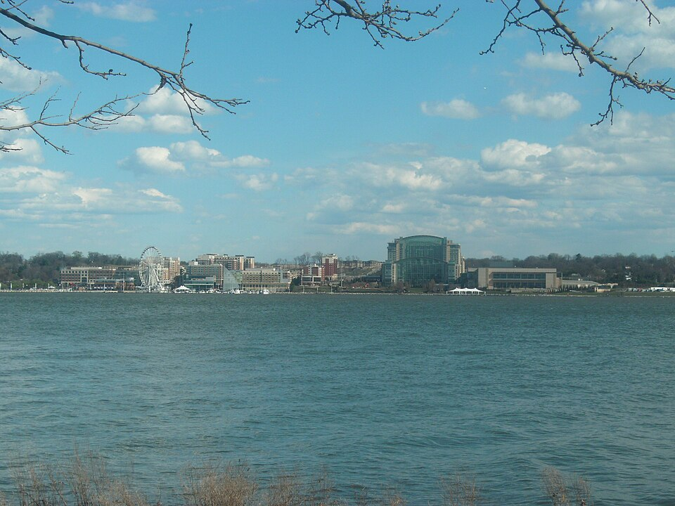

Illy Cafe National Harbor
Address:138 Waterfront St, Oxon Hill, MD 20745
Website:
Illy Cafe
A short walk to the National Harbor waterfront, this shop is known for its calm and comfortable atmosphere and friendly service. Menu options include coffee, tea, espresso-based beverages, and specialty drinks, as well as pastries and breakfast and lunch selections. The shop is described as "refined yet approachable" by nationalharbor.com.
| Region | Waterfront View | Walkable to Waterfront |
|---|---|---|
| Capital | No | Yes |
3 Things to Try:
- Lavender Mint Latte
- Custard-Filled Croissant
- Salted Caramel Gelato
At Illy Cafe, the cappuccino stands out—rich, balanced, and exactly what you expect from a premium coffee spot, with consistently high-quality beans and the manger is ready to improve the experience. The harbor location, welcoming atmosphere, and genuinely kind service make it a much-needed, comfortable space to slow down and enjoy the waterfront.
-Fredy L Martínez
Whenever I come here, the baristas/cashiers are always professional and attentive. The food and drinks well made and the ambience is conducive to sitting and relaxing and/or people watching.
-Andrea Su
